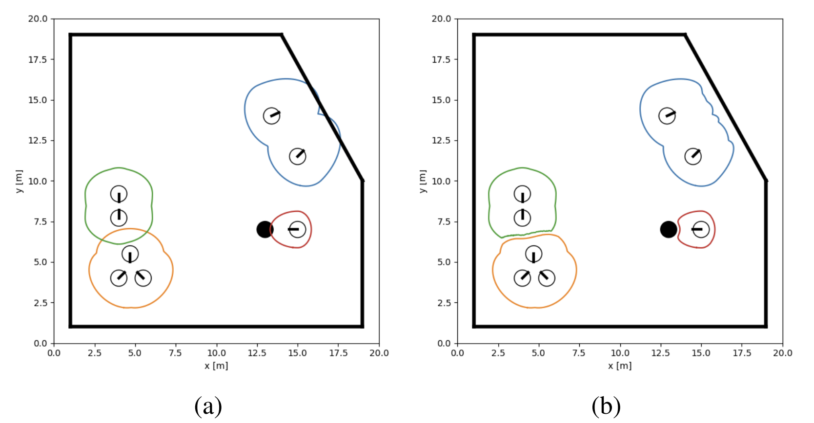

Adaptive social space delimitation for mobile robots, ensuring safe and natural human-robot interactions through dynamic boundary adjustments.

In this project, I addressed the social space delimitation problem in mobile robots to ensure safe and comfortable human-robot interactions. Social spaces are the invisible zones that people maintain around themselves, and respecting these spaces is crucial for robots operating in human environments. To tackle this, we developed an adaptive social space delimitation algorithm that dynamically adjusts based on environmental factors, human presence, and obstacles. The approach is inspired by elastic band theory, commonly used in robotics for path planning, allowing for a flexible and responsive boundary around individuals or groups.
Unlike static models, which struggle in crowded or complex environments, our algorithm continuously updates based on both human behavior and obstacles, ensuring robots navigate efficiently while maintaining socially acceptable distances. Through simulations and real-world datasets, we demonstrated that our approach provides an accurate and adaptable representation of social spaces, paving the way for more natural and intuitive human-robot interactions.
This was my first ever paper so it was a little scary at first, but I learned a lot. Hopefully many more will come soon!
Read the full paper here.